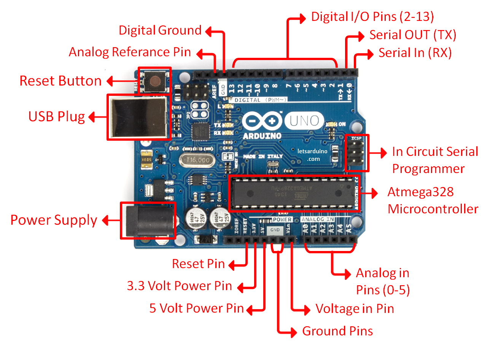

Arduino Uno R3

A versatile microcontroller board for electronics projects.
Key Information
- Type: Microcontroller Board
- Microcontroller: ATmega328P
- Operating Voltage: 5V
- Input Voltage (recommended): 7-12V
- Digital I/O Pins: 14 (of which 6 provide PWM output)
- Analog Input Pins: 6
- DC Current per I/O Pin: 20 mA
- Flash Memory: 32 KB (ATmega328P) of which 0.5 KB used by bootloader
- SRAM: 2 KB (ATmega328P)
- EEPROM: 1 KB (ATmega328P)
- Clock Speed: 16 MHz
About the Arduino Uno R3
The Arduino Uno R3 is a popular open-source microcontroller board based on the ATmega328P. It's an excellent choice for beginners to electronics and coding, offering a simple and accessible platform for creating interactive projects. Its robust community support and vast library of examples make it ideal for learning and rapid prototyping.
You can use the Arduino Uno R3 to read inputs from various sensors (e.g., light sensors, temperature sensors, motion sensors) and control outputs (e.g., motors, LEDs, displays). It connects to your computer via a USB cable and can be programmed using the Arduino IDE (Integrated Development Environment).